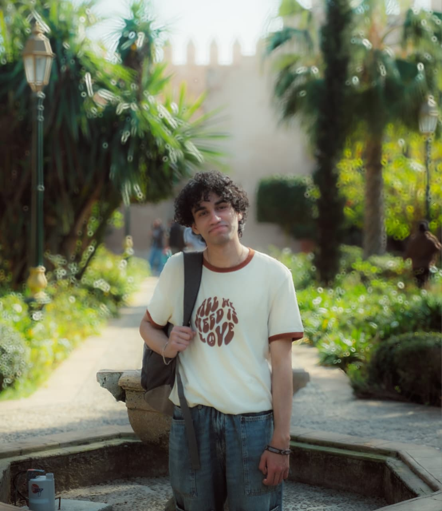

Creative portfolio
Welcome
This is the creative portfolio of Mohammed Amine Jebli, a communication student at Al Akhawayn University.

About Me
Background
I am a communication student at Al Akhawayn University in Ifrane, Morocco. My passion lies in visual communication, design thinking, and creative storytelling. Through my work, I explore how design and visual elements can communicate meaningful ideas and create connections with audiences.
My creative interests span multiple disciplines including photography, graphic design, digital media, and visual art. I believe in the power of clean aesthetics and purposeful design to convey messages effectively.
Creative Philosophy
I value minimalism and clarity in communication. I believe that great design removes the unnecessary and leaves only what matters, creating space for the message to shine through. Every visual element should serve a purpose and contribute to the overall narrative.
My goal is to create work that is both aesthetically refined and functionally meaningful, resonating with viewers through visual elegance and thoughtful composition.
Experience
Through my studies at Al Akhawayn University, I have developed expertise in visual communication, digital design, and multimedia projects. I have collaborated on various creative initiatives and have a strong foundation in design principles, content creation, and digital storytelling. I continue to explore and develop my creative practice across multiple visual mediums.